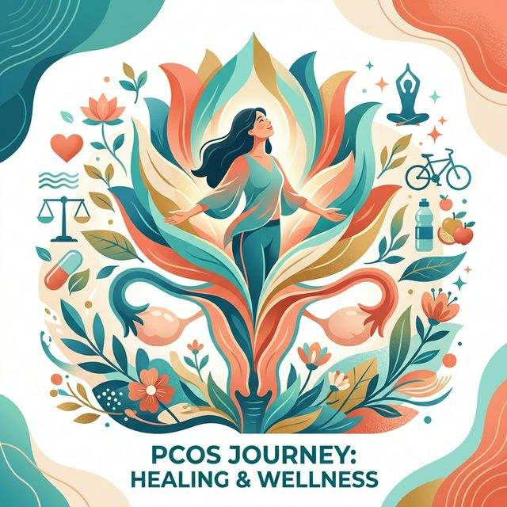
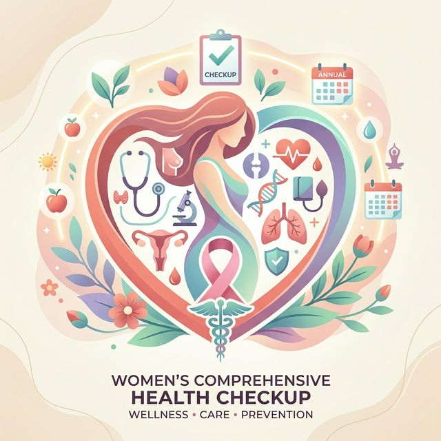

Comprehensive women's healthcare for every stage of life
Prof. (Dr.) S.C. Santra provides expert diagnosis and treatment across all areas of women's health.
Complete prenatal and postnatal care ensuring a safe and healthy pregnancy journey. Includes regular checkups, nutritional guidance, ultrasound monitoring, risk assessment, and delivery planning. Special attention to high-risk pregnancies with personalized care plans.
Expert diagnosis and treatment of irregular periods, heavy menstrual bleeding (menorrhagia), painful periods (dysmenorrhea), absent periods (amenorrhea), and premenstrual syndrome (PMS). Comprehensive hormonal evaluation and management.

Specialized treatment for Polycystic Ovary Syndrome (PCOS) including hormonal therapy, lifestyle modification guidance, weight management, and fertility-related PCOS treatment. Regular monitoring and follow-up care to manage symptoms effectively.
Comprehensive fertility evaluation for couples trying to conceive. Includes hormonal testing, ovulation tracking, treatment of infertility causes, and guidance on assisted reproductive options. Compassionate counselling throughout the journey.
Advanced ultrasound imaging services for pregnancy monitoring, fetal growth assessment, ovarian and uterine evaluation, and early detection of gynecological conditions. Non-invasive diagnostic tool for accurate assessment.

Comprehensive health screening for women of all ages including Pap smear, breast examination, pelvic examination, bone density assessment, and routine blood work. Preventive care to catch potential issues early.
Guidance and treatment for women going through menopause. Includes hormone replacement therapy evaluation, management of hot flashes, mood changes, bone health, and post-menopausal health monitoring.
Expert surgical consultation and referral for gynecological procedures including hysterectomy, fibroid removal, ovarian cyst management, and other minimally invasive gynecological procedures when medically necessary.
Safe, confidential Medical Termination of Pregnancy services under certified specialist care. Complete pre and post procedure counselling provided. Evidence-based family planning advice tailored to individual needs.
Certified SpecialistSpecialized treatment for long-term infertility cases, even after many years. Led by a highly experienced doctor with a strong success record, offering personalized care, advanced diagnostics, and proven treatment plans to help couples achieve parenthood.
✔ Successfully treating infertility cases for years
Over 45 years of dedicated service to women's health in Kolkata.
Prof. (Dr.) S.C. Santra brings over three decades of clinical experience from one of Kolkata's premier medical institutions.
Formerly Medical Superintendent Cum Vice-Principal at NRS Medical College & Hospital, ensuring the highest standard of care.
Every patient receives personalized attention, thorough explanations, and compassionate care in a comfortable environment.